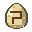

Choose your path
Grow as a kaiju or earn your place among the hunters.
Five species, one choice
Use a species' altar to unlock it. All kaiju use six growth stages; stage 1 has only a half form. The final stage keeps the old maximum strength.
Ocean Beast
An aquatic heavyweight with an explosive beam, claw swipes and a walking stomp.
Read the guide →Gila
A cave predator with venom, spreading fire, digging, wall climbing and a powerful dash.
Read the guide →Mountain Serpent
A winged, two-headed kaiju with purple lasers. Mobile, but less forgiving when caught.
Read the guide →Frostback
A slow, heavily armored quadruped with frost breath and a front-leg stomp.
Read the guide →
Solar Worm
A long desert serpent with a marking bite, yellow Sun Bolts and a low sprinting slither.
Read the guide →How to grow
| Upgrade | Objective |
|---|---|
| 1 → 2 | While half-turned, defeat 10 human Townsfolk from this mod. Vanilla villagers and cultists do not count. |
| 2 → 3 | While fully transformed, defeat a full kaiju at stage 2 or higher. |
| 3 → 4 | Break a hamlet heart while at stage 3. |
| 4 → 5 | Break a town heart while at stage 4. |
| 5 → 6 | At stage 5, break a city heart and defeat a stage-5-or-6 full kaiju while fully transformed. Either order works; both objectives are remembered. |
Heart victories must happen at the required progression stage; destroying one early does not bank its upgrade. Half-kaiju NPCs do not count as full-kaiju kills. Stage 6 is the hard cap, including growth commands.
Forms, appearance and recovery
Use V for half form, hold G for full form, and open H for appearance and progress. Ability lists follow your species. Third-person camera distance adjusts to kaiju size.
Half forms and hunters borrowing eyes show species features: Ocean spines, Gila tusks, Mountain wings and horns, Frostback plates, or Solar crown horns and golden neck fins. First-person skin colors follow the chosen species. Gila has two blended skin colors and a separate tooth/tusk color.
Player species have matching regeneration at matching growth stages. NPC kaiju do not gain player passive regeneration.
Energy and feeding
| Species | Recover energy |
|---|---|
| Ocean Beast | Stay near radioactive bloom. |
| Gila | Bathe in source lava. |
| Mountain Serpent | Stay near amethyst. |
| Frostback | Stay near ice, packed ice or blue ice. |
| Solar Worm | Rest under exposed daylight. |
Half and full forms use the beast energy bar. Its passive drain is slower than in early releases. Destroying a village heart or an unguarded rival altar gives a full meal. Return to human form to eat ordinary food.
Enemies and settlements
Different kaiju species oppose each other. Friendly settlement residents respect their own species; same-species rivalry remains in the wild. At stage 6 you can capture a defeated settlement.
Swear the oath
Bring an eye from any species to a Hunter King and accept the trade for a Scale Chestplate. Taking the trade makes you a hunter. You cannot later unlock a beast form through an altar.
Earn your rank
Press H to check your next trial. Complete it, then return to a Hunter King for promotion and gear.
| Rank | Trial | New equipment |
|---|---|---|
| 1 · Sworn | Trade an eye to a Hunter King. | Scale Chestplate |
| 2 · Blooded | Kill a kaiju. | Scale Boots, Leggings, and Crossbow |
| 3 · Warden | Help defeat a village raid: hit a raider and be inside the walls when the raid is beaten. | Scale Spear |
| 4 · Slayer | Kill a kaiju at stage 4 or higher. | Scale Shield and Helmet |
| 5 · King | Kill a kaiju at stage 5 or higher while it is raiding a village. | Scale gear crafting and access to the Lance |
Fight with speed
Tap Sprint to dash in the direction you are looking. It works on the ground or in the air, recharges in two seconds, and gets stronger as you rank up. NPC hunters can dash during combat too.
Your scale crossbow draws its power from your worn scale armour. Wear a Scale Chestplate to fire it. Better equipment improves its damage and recharge.
Call reinforcements
From rank 2, press X to summon your levy. They stay for five minutes, and the ability recharges in 20 minutes at normal game speed.
| Rank without active eyes | Troops |
|---|---|
| 2 · Blooded | 3 hunters |
| 3 · Warden | 5 hunters |
| 4 · Slayer | 3 hunters, 3 honour guards, 1 golem |
| 5 · King | 5 hunters, 3 honour guards, 2 golems |
Each active borrowed eye lowers your effective rank for this troop table by one. If that puts you below rank 2, you cannot summon a levy. This does not lower your actual hunter rank. Your summoned troops remain loyal even with both eyes active.
Borrow a beast’s power
Activate up to two different species' eyes for their borrowed powers and visible features. Holding Use on a third eye for five seconds causes Betrayal: you lose hunter powers and become that eye's stage-2 kaiju in full form. The final eye may duplicate an earlier species.
Read the eye guide →Replace lost gear
Speak to a Hunter King to reclaim earned rank equipment you are missing. To make a Lance, bring a Scale Crossbow and Scale Spear to a Hunter King; both are used in the forging. You need King rank to use the Lance.
Take territory
King-rank hunters can capture a defeated rival settlement by holding right-click on its heart or altar with both hands empty for ten seconds. See capture rules.